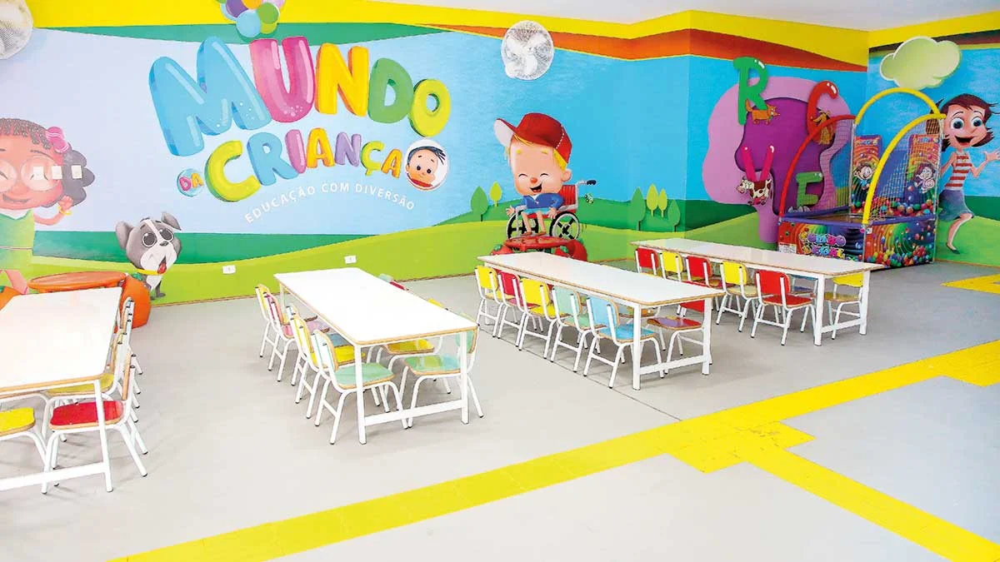
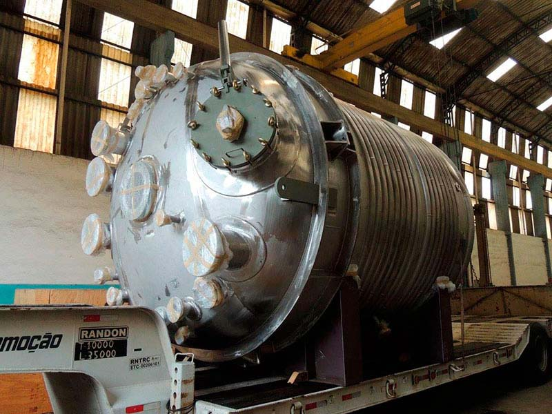

Tecnologia🧑💻
China quer ser potência de robôs humanoides

A China está se posicionando como uma futura potência no campo dos robôs humanoides, conforme evidenciado pela recente Conferência Mundial de Robôs realizada em Pequim. Este evento destacou o compromisso do país com o avanço da robótica, apresentando inovações significativas e acessíveis que podem transformar não apenas a indústria de robótica, mas também setores como manufatura, automotivo, agricultura, educação e saúde.
Mais de 160 empresas, tanto chinesas quanto estrangeiras, exibiram mais de 600 produtos, incluindo 27 lançamentos inéditos. Um dos destaques foi a Wisson Technology, sediada em Shenzhen, que apresentou braços robóticos flexíveis feitos de plástico impresso em 3D e músculos artificiais pneumáticos. Essa abordagem inovadora permite que a empresa ofereça seus produtos por aproximadamente um décimo do custo dos braços robóticos tradicionais.
O primeiro-ministro chinês, Li Qiang, enfatizou o "enorme potencial de mercado" da indústria de robôs e a importância de desenvolver "novas forças produtivas" em tecnologia. A política do presidente Xi Jinping de fomentar o desenvolvimento tecnológico é um claro indicativo do apoio governamental ao setor.
A conferência não apenas reforçou a posição da China como o maior mercado mundial de robôs industriais, mas também serviu como uma vitrine para ideias inovadoras que podem ser aplicadas em robôs humanoides. Isso reflete uma tendência crescente de robôs mais sofisticados e acessíveis, que têm o potencial de revolucionar diversas indústrias e melhorar a qualidade de vida das pessoas.
A China está, portanto, estabelecendo um novo padrão na robótica humanóide, com implicações significativas para o futuro da automação e da inteligência artificial. A capacidade de produzir componentes de alta qualidade a custos reduzidos pode acelerar a adoção de robôs humanoides em várias aplicações, tornando a visão de uma sociedade assistida por robôs uma realidade mais próxima.
Educação📚
Desafio Nacional: A Realidade das Filas de Espera por Creches no Brasil
O Brasil enfrenta um desafio significativo na educação infantil: mais de 632 mil crianças estão em fila de espera por uma vaga em creches públicas. Este número alarmante reflete uma realidade em quase metade dos municípios brasileiros, onde 44% deles relatam a existência de filas de espera. O levantamento nacional "Retrato da Educação Infantil no Brasil - Acesso e Disponibilidade de Vagas", realizado pelo Gabinete de Articulação para a Efetividade da Política da Educação no Brasil (Gaepe-Brasil), revela a profundidade do problema e a necessidade urgente de expansão da oferta de vagas.
A educação infantil é um direito garantido pela Constituição Federal de 1988 e reafirmado pelo Supremo Tribunal Federal em 2022. As creches, destinadas a crianças até os 3 anos de idade, e as pré-escolas, para aquelas entre 4 e 5 anos, são fundamentais para o desenvolvimento inicial e a preparação para o ensino fundamental. No entanto, a falta de vagas impede que muitas crianças tenham acesso a esse direito básico.
O estudo, que contou com a participação de todos os 5.569 municípios e o Distrito Federal, identificou que 88% das cidades com filas de espera apontam a falta de vagas como o principal motivo. Outras razões incluem a opção dos pais de não matricular seus filhos, desconhecimento sobre o processo de matrícula, distância das instituições de ensino, falta de transporte adequado e mudanças frequentes de endereço.
Por faixa etária, 19% das crianças na fila têm até 11 meses; 28%, 1 ano; 26%, 2 anos; 21%, 3 anos; e 5%, 4 anos. A região Sudeste lidera com o maior número de crianças fora de creches, totalizando 212,5 mil. São Paulo, Minas Gerais e Paraná são os estados com as maiores demandas.
Este cenário exige uma ação coordenada e efetiva do poder público para garantir o cumprimento do direito à educação infantil. A criação de um plano de ação nacional para a expansão das vagas é imperativa para enfrentar essa questão crítica e promover o desenvolvimento integral das crianças brasileiras.
Ciência🧪
Avanço Científico: Novo Reator Produz um dos Químicos Mais Valiosos do Mundo
Em um mundo onde a demanda por produtos químicos eficientes e sustentáveis está em constante crescimento, um novo reator desenvolvido por pesquisadores promete revolucionar a indústria química. Este reator inovador, capaz de gerar um dos produtos químicos mais procurados globalmente, representa um marco significativo na ciência e na tecnologia.
O produto químico em questão, cujo nome não foi divulgado devido a questões de propriedade intelectual e patentes em andamento, é essencial para uma variedade de aplicações industriais, incluindo a fabricação de plásticos, fertilizantes e produtos farmacêuticos. A capacidade de produzi-lo de forma mais eficiente e menos prejudicial ao meio ambiente coloca este reator no centro das atenções do setor.
A tecnologia por trás do reator é baseada em um processo catalítico avançado que otimiza a síntese do produto químico, reduzindo significativamente o consumo de energia e a geração de resíduos. Além disso, o reator é projetado para ser altamente escalável, o que significa que pode ser adaptado para atender às necessidades de produção de pequenas e grandes empresas.
Os pesquisadores responsáveis pelo desenvolvimento do reator destacam que, além de aumentar a eficiência da produção, a nova tecnologia também contribui para a redução da pegada de carbono da indústria química. Isso é particularmente relevante no contexto atual, onde a sustentabilidade se tornou uma prioridade para empresas e consumidores.
Embora os detalhes técnicos do reator ainda estejam sob análise e revisão por pares, os resultados preliminares indicam que a inovação tem o potencial de transformar a maneira como os produtos químicos são produzidos em todo o mundo. A expectativa é que, uma vez que a tecnologia seja comercializada, ela possa levar a uma redução significativa nos custos de produção, beneficiando tanto os fabricantes quanto os consumidores finais.
Este avanço científico é um exemplo claro de como a pesquisa e o desenvolvimento podem ter um impacto positivo direto na economia e no meio ambiente. À medida que a indústria química continua a buscar soluções mais verdes e eficientes, tecnologias como o novo reator serão fundamentais para garantir um futuro mais sustentável.
Astronomia🌌
Descoberta Arqueológica Revela Observatório Astronômico de 2,6 Mil Anos no Egito

Uma descoberta arqueológica surpreendente veio à luz com a revelação de um observatório astronômico com cerca de 2,6 mil anos de idade no Egito. Este sítio, que representa o primeiro e maior observatório do século VI a.C., foi encontrado durante uma missão arqueológica no Templo de Buto, em Tell el-Fara’in, na província de Kafr El Sheikh, aproximadamente 130 quilômetros distante da capital Cairo.
O observatório, construído com tijolos de barro, cobre uma área de 850 metros quadrados e era utilizado para observar e registrar fenômenos celestes, como o movimento do sol e das estrelas. A importância deste achado reside não apenas na sua antiguidade, mas também na compreensão que oferece sobre as habilidades astronômicas dos antigos egípcios. As paredes do observatório são adornadas com pinturas que simbolizam sistemas cósmicos, evidenciando o conhecimento avançado que possuíam sobre o universo.
Entre os artefatos encontrados, destaca-se um relógio de sol de pedra inclinado, também conhecido como relógio de sombra, que era utilizado para medir o tempo. Este instrumento é considerado uma das ferramentas mais avançadas da época para essa função. A descoberta reforça a ideia de que os egípcios não apenas acompanhavam os ciclos celestes para determinar o calendário solar e as datas de rituais religiosos e oficiais, mas também possuíam técnicas astronômicas sofisticadas, apesar da simplicidade dos instrumentos utilizados.
A missão arqueológica também revelou cinco salas de tijolos, provavelmente usadas para armazenar ferramentas, além de quatro pequenas salas de tijolos e uma pequena sala de pedra identificada como a torre do observatório. A estrutura e a disposição destas salas sugerem uma organização meticulosa e um propósito claro voltado para a observação astronômica.
Esta descoberta não apenas lança luz sobre a história da astronomia, mas também sobre a própria história do Egito Antigo, oferecendo novas perspectivas sobre como essa civilização via e entendia o cosmos. O observatório de Buto é um testemunho da relação intrínseca entre ciência, religião e sociedade no Egito Antigo, e continua a fascinar e inspirar pesquisadores e entusiastas da história ao redor do mundo.